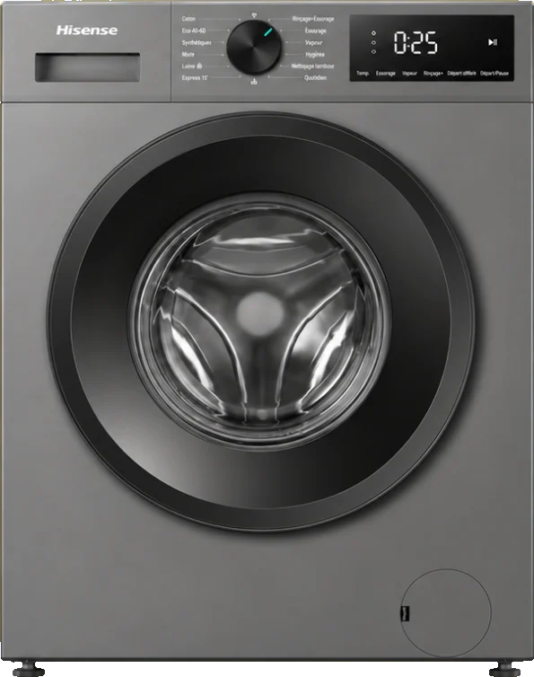
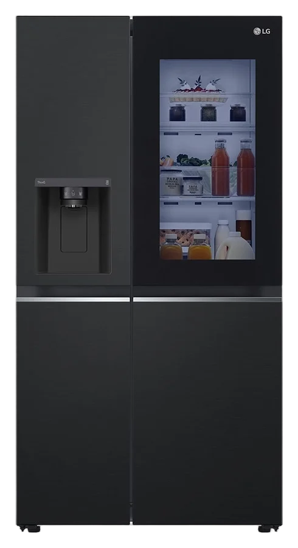
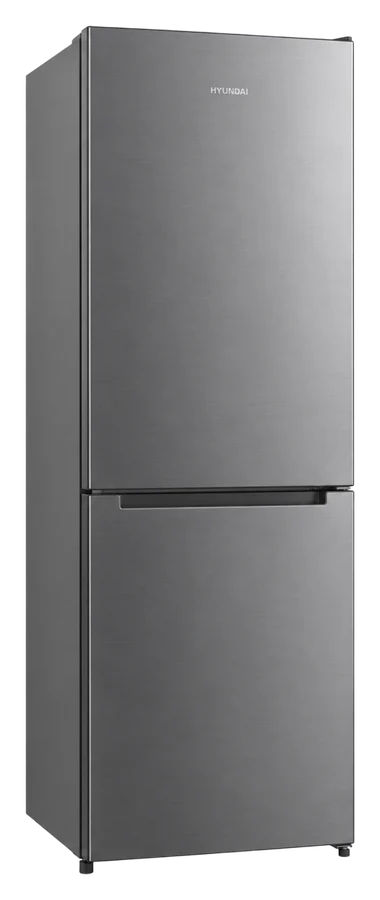
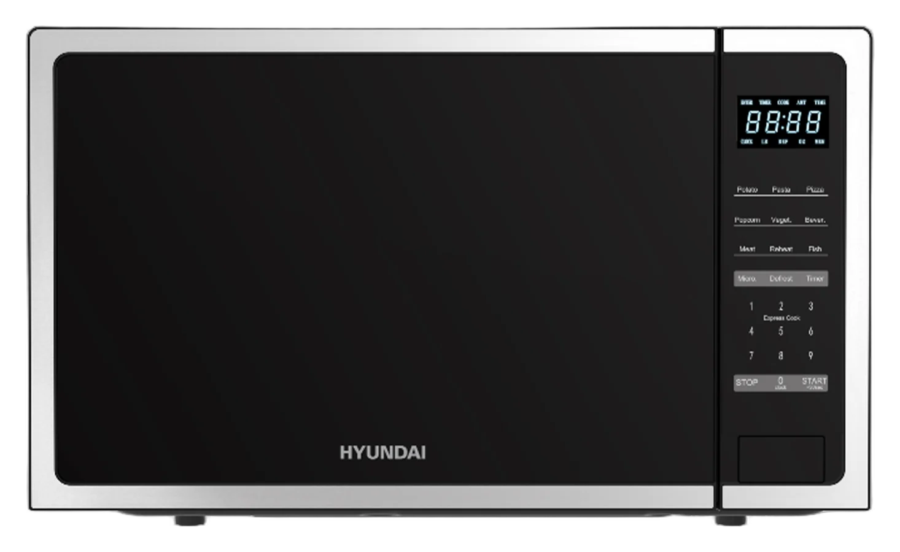

Riso

Riso Kalo
Trame de points rouge et bleu, légèrement décalés, sur papier jaune.
HorizonX · Riso Glow, Warm Press
SHADERCinq traitements d'image, les produits Kalo et les quatre couleurs de la charte. Tout est calculé en direct dans la page.
Des finitions pour les packshots. Survolez une carte pour voir la photo d'origine.

Trame de points rouge et bleu, légèrement décalés, sur papier jaune.
HorizonX · Riso Glow, Warm PressNoir et blanc pur en points ordonnés, façon journal ou vieil écran.
HorizonX · Marble Signal, Silver Hound
Le produit dessiné en caractères bleu Kalo sur fond noir.
HorizonX · Glyph Study, Arena Glyph
Lignes violettes dont l'épaisseur suit l'ombre, comme un billet de banque.
HorizonX · Contour Type, Drift LinesUn fond animé aux couleurs de Kalo, pour les bannières de temps forts et les statuts WhatsApp.
Exemple de bannière. Les prix et la classe énergie se posent par-dessus, dans le format d'affiche validé.
Une grille « bento » pour la page d'accueil du futur site.
Quatre idées vidéo et quatre idées photo tirées de ces styles. Toutes se font avec un téléphone, les packshots existants et Remotion.
Le produit apparaît en glyphes bleus, une ligne de scan passe et le révèle en vraie photo, puis le prix et la classe énergie arrivent.
Les produits de la semaine défilent dans un tunnel de cartes qui foncent vers l'écran, le dernier s'arrête plein cadre.
Le fond animé rouge et jaune de cette page, avec un seul gros message par-dessus. Format vertical pour WhatsApp.
Le futur site Kalo sur l'écran du magasin, une main fait défiler, titre fixe en haut. Le format de la vidéo @w.wearebrand.
Une affiche par famille (froid, lavage, cuisine) en trame rouge et bleue sur jaune. Pour l'image de marque, jamais pour une promo à prix.
Le produit en trame 1 bit, sans nom. Réponse le lendemain avec la vraie photo. Fait commenter sans dépenser.
Produit sur fond noir, une seule lampe LED derrière qui dessine son contour. Le rendu « premium » des modèles HorizonX, fait en magasin.
Cinq produits d'une gamme en cartes inclinées, comme le héros de cette page. Couverture Facebook et accueil du site.